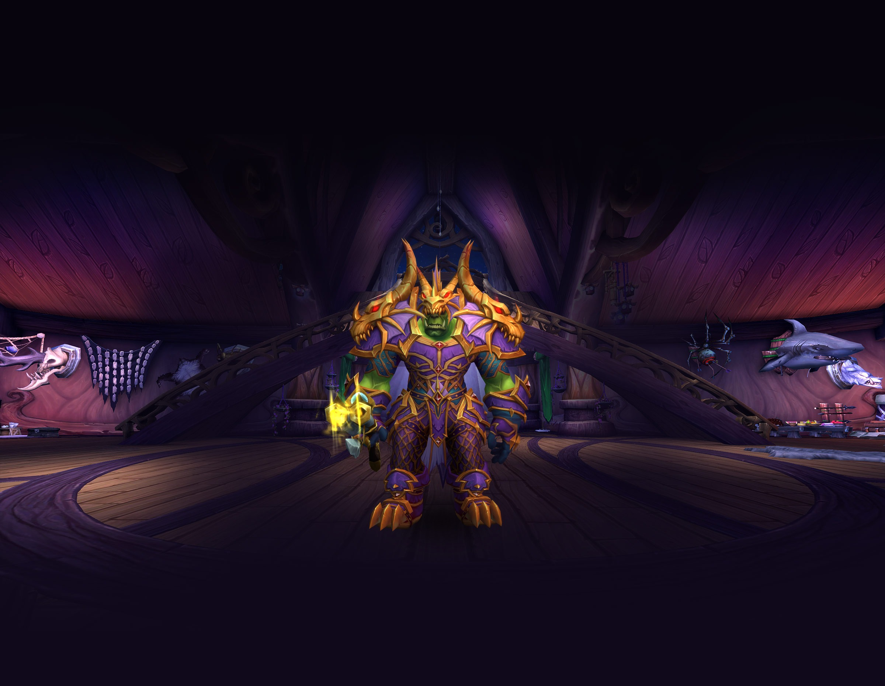
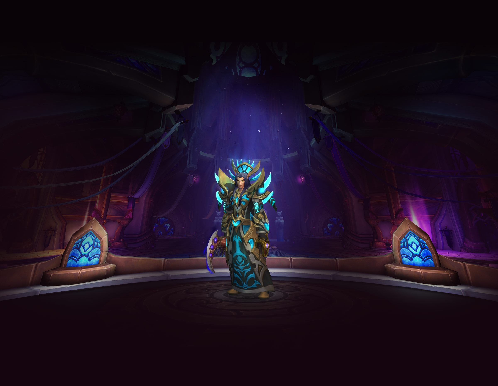
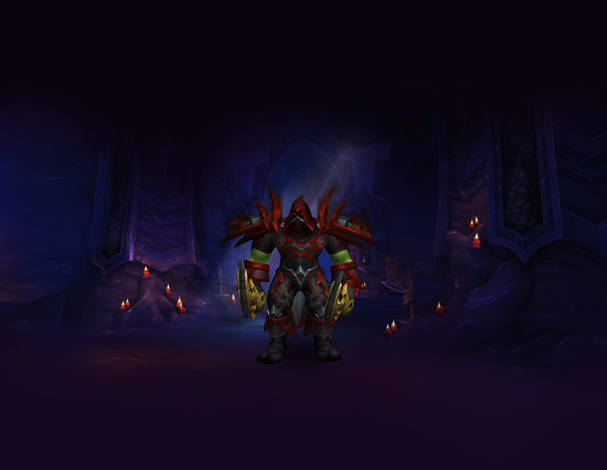
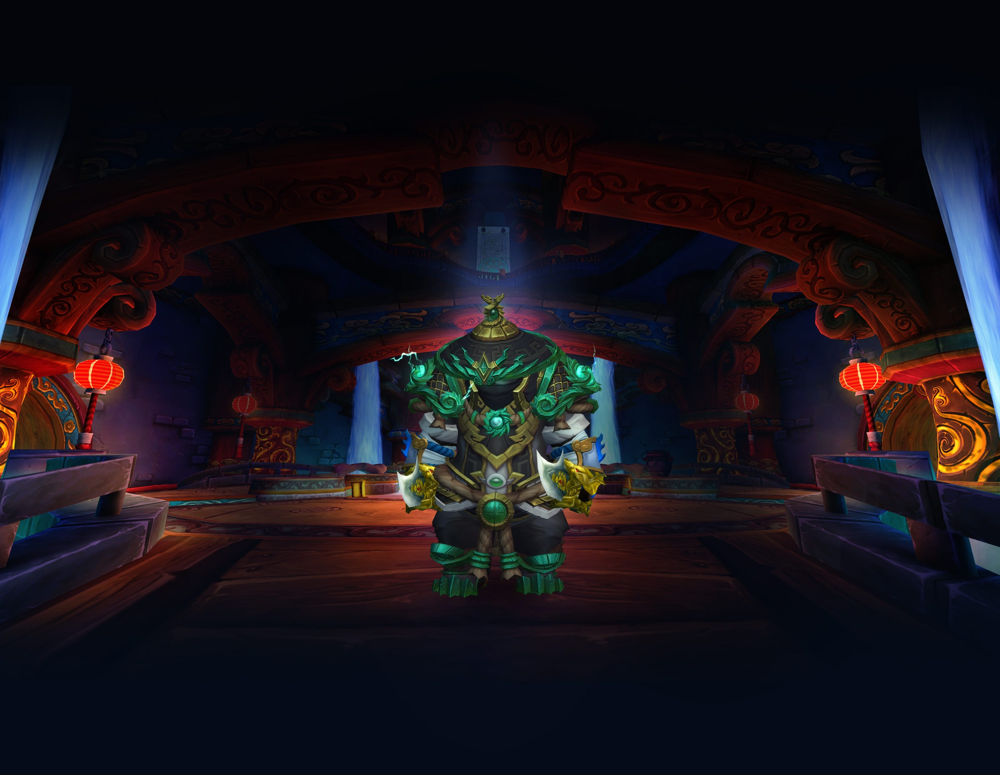
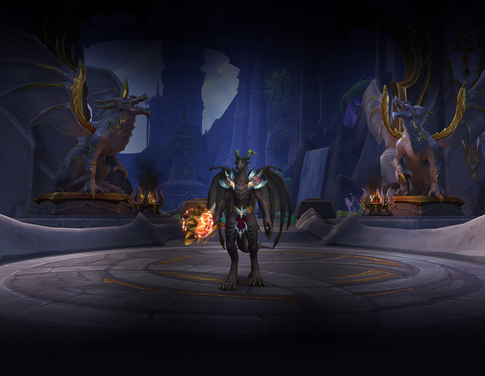

Death Knight

When the Lich King’s control over his death knights was broken, his former champions found their new purpose as Knights of the Ebon Blade. After Bolvar Fordragon donned the helm to keep the undead Scourge contained, he called forth a new generation of death knights to join the Ebon Blade's cause.
Specializations
- Blood
- Frost
- Unholy
Hunter
From an early age, the call of the wild draws some adventurers from the comfort of their homes into the unforgiving primal world outside. Those who endure become hunters. Masters of their environment, they are able to slip like ghosts through the trees and lay traps in the paths of their enemies.
Specializations
- Beastmaster
- Marksmanship
- Survival
Priest
Priests are devoted to the spiritual, and express their unwavering faith by serving the people. For millennia they have left behind the confines of their temples and the comfort of their shrines so they can support their allies in war-torn lands. In the midst of terrible conflict, no hero questions the value of the priestly orders.
Specializations
- Discipline
- Holy
- Shadow
Demon Hunter

Demon hunters, disciples of Illidan Stormrage, uphold a dark legacy, one that frightens their allies and enemies alike. The Illidari embrace fel and chaotic magics—energies that have long threatened the world of Azeroth—believing them necessary to challenge the Burning Legion. Wielding the powers of demons they’ve slain, they develop demonic features that incite revulsion and dread in fellow elves.
Specializations
- Havoc
- Vengeance
Rogue
or rogues, the only code is the contract, and their honor is purchased in gold. Free from the constraints of a conscience, these mercenaries rely on brutal and efficient tactics. Lethal assassins and masters of stealth, they will approach their marks from behind, piercing a vital organ and vanishing into the shadows before the victim hits the ground.
Specializations
- Assassination
- Outlaw
- Subtlety
Monk
When the pandaren were subjugated by the mogu centuries ago, it was the monks that brought hope to a seemingly dim future. Restricted from using weapons by their slave masters, these pandaren instead focused on harnessing their chi and learning weaponless combat. When the opportunity for revolution struck, they were well-trained to throw off the yoke of oppression.
Specializations
- Brewmaster
- Mistweaver
- Windwalker
Evoker
Dracthyr Evokers were created to wield the magic of all five dragonflights, and seek to forge their own path in Azeroth. They can empower their draconic abilities through magic, charging up their attacks and unleashing them at the right moment to devastating effect, and use their superior mobility to dart in and out of the fray as the situation demands.
Specializations
- Augmentation
- Devastation
- Preservation
More Info
This is a placeholder section further down the page.